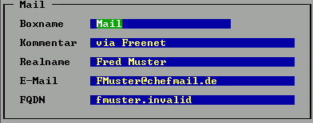
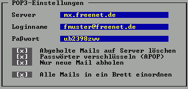
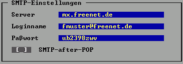
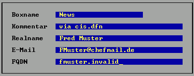
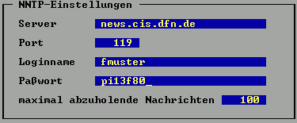

Mail und News mit OpenXP/32 (Windows/Linux)
Neuinstallation
Update
- OpenXP/32 herunterladen und in ein neues Verzeichnis entpacken
- OpenXP.exe starten
Bei Erstinstallation wird man nach Netztyp, Boxname und Username gefragt. Die Angaben dort sind entsprechend wie unten zu machen.
Bei Fragen steht die Online-Hilfe immer per <F1> zur Verfügung!
Mail einrichten
- Edit/Boxen/Neu, POP3/SMTP, legt eine neue Box für Mails an.

Der FQDN (Fully Qualified Domain Name) muß eine Domain sein, die auf längere Zeit eindeutig dem User zugeordnet sein muß. Falls keine eigene Domain zur Verfügung steht, kann man bei http://fqdn.th-h.de oder http://www.myfqdn.de für FQDNs brauchbare Subdomains bekommen.
- Edit/POP3, Einstellungen zum Abholen der Mails ändern.

- Edit/SMTP, Einstellungen zum Senden der Mails ändern.

Vorsicht: Logindaten dürfen nur angegeben werden, falls der Mailprovider SMTP Auth unterstützt. Ansonsten Felder bitte leer lassen und SMTP-after-POP benutzen. Sollte der SMTP-Server eines Internetproviders benutzt werden, darauf achten, auch beim Absenden über diesen Provider eingewählt zu sein.
- Neue Mails werden per Nachricht/Direkt oder über die Userliste geschrieben. Versenden/Abholen von Mails über Netcall/Einzeln.
News einrichten
- Edit/Boxen/Neu, NNTP, legt eine neue Box für News an.

Diese Angaben werden für eigene News-Artikel benutzt.
- Edit/NNTP, Einstellungen zum Server ändern.

- Edit/Diverses, Mailserver für Antworten auf News-Artikel per Mail festlegen.
Als PM-Vertretersystem die eben eingerichtete SMTP/POP3-Box eintragen.
- Internetverbindung herstellen (DFÜ-Netzwerk, pppd o.ä.).
- Nachricht/Brettmanager/Liste anfordern, News-Box wählen, "Alle Gruppen". Die Liste aller verfügbaren Newsgroups wird geholt.
- Nachricht/Brettmanager/Bestellen, News-Box wählen. Newsgroups abonnieren.
- Netcall/Einzeln, News-Box wählen. Die letzten Artikel der abonnierten Newsgroups werden geholt.
- Viel Spaß beim Lesen! :-)
Allgemein
- Neues Verzeichnis für OpenXP anlegen.
- Den kompletten Inhalt des alten XP Verzeichnisses inkl. aller
Unterverzeichnisse in das neue Verzeichnis kopieren.
- OpenXP/32 im neuen Verzeichnis entpacken und starten. Dabei werden ggf.
die Datenbanken automatisch überarbeitet.
- Nun alle Einstellungen überprüfen und anpassen. Dies betrifft
insbesondere alle Pfade, Aufrufe externer Programme und alle Box-Konfigurationen.
Evtl. ist es sinnvoll, neuen Boxen mit neuen Typen (falls nötig) neu
anzulegen und anschließend einen Serverwechsel durchzuführen.
In den Box-Configs empfiehlt es sich, alle Fenster, in denen nichts
geändert werden muß, mit Ctrl-Enter zu verlassen. Dabei werden die .bfg
Dateien im richtigen (neuen) Format abgespeichert.
Linux
- Das RPM-Archiv installiert die Binaries in /usr/local/lib/openxp/. In
/usr/local/lib/openxp/doc/ sind die Anleitungen zu finden. Diese sind z.Zt.
noch nicht auf dem aktuellen Stand. Besser ist die Online-Hilfe.
Die rpm-Installation sollte als root ausgeführt werden (und nicht etwa als
User mit world-writeable Rechten auf /usr/local/lib/openxp...).
- OpenXP/Linux legt alles, was benötigt wird, in $HOME/.openxp/ beim
ersten Programmstart an. Dann ist es natürlich zu spät, die Dateien aus
einer alten XP Version komplett dorthin zu kopieren, da man dabei neue
Versionen überschreiben würde.
- Wenn man also von einer nicht-Linux-Version zu OpenXP/Linux wechseln möchte,
muß man vor dem ersten Programmstart von openxp $HOME/.openxp/ manuell
anlegen und alles dorthin kopieren. In $HOME/.openxp/ kann man nun
natürlich alle DOS-spezifischen Dateien (*.exe, *.bat *.ovl etc) löschen.
- OpenXP/Linux arbeitet (meist) mit kleingeschriebenen Dateinamen. Sollten
Dateien beim Kopieren von DOS-Partitionen als großgeschriebene Dateinamen
angekommen sein, muß man sie ggf. umbenennen.
Achtung: Für die boxenspezifischen Dateien (*.bfg, *.rc usw.) wird in
Sachen Groß-/Kleinschreibung die gleiche Schreibweise wie in OpenXP gewählt,
d.h. eine Box "TesT" verwendet die Dateien "TesT.bfg", "TesT.rc" usw. im
Gegensatz zu "TEST.BFG" der anderen XP-Versionen. An dieser Stelle muß man
also die Dateien von Hand umbenennen.
- openxp starten. Dabei werden ggf. die Datenbanken automatisch überarbeitet.
- Weiter bei "Allgemein", Punkt 4.